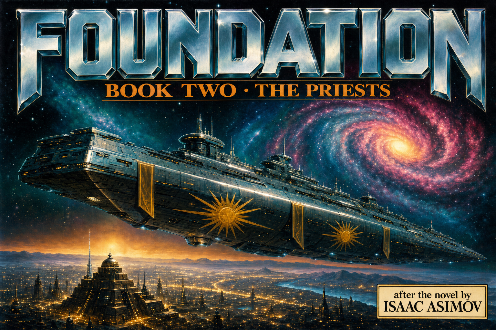

Thirty years after his bloodless coup, Salvor Hardin ruled four kingdoms without an army — through a religion whose miracles were machines and whose every priest answered to Terminus. When Wienis aimed a resurrected Imperial battleship at the Foundation, Hardin let him aim it: the priest aboard cursed the ship dark, the interdict blacked out a kingdom at midnight, and the mob came for the Regent with torches. A blaster beam broke on a force shield like water on glass. The religion of science, Hardin said, was their bridle and saddle. But Seldon's hologram left a warning folded inside the victory: spiritual power can defend — it cannot attack. One quiz stands between you and the end — it tests the WHY, not the what.